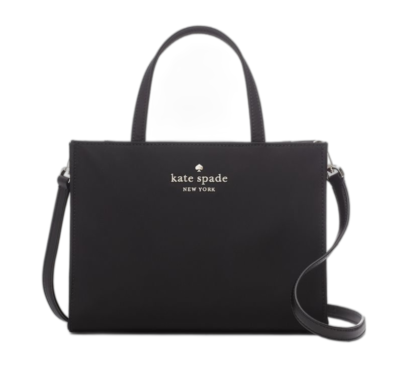

In 1986, after completing their education, the couple moved to New York City, where Kate worked for the women's magazine Mademoiselle. Although she earned the title of senior editor/head of accessories, she resigned in 1991 to start her own handbag line. Mr. Spade put $35,000 from his retirement savings into the fledgling business. To get inspiration, Kate browsed local flea markets and secondhand stores while also researching the styles, fabrics, and production costs of making her own handbags. The couple introduced an initial lineup of six purses in 1993. Her main target market was the upper middle class.
The first purse ever made by Kate Spade in 1993 was called the "Sam." It was a practical tote bag with the brand's name modestly displayed in the top center. This was a far cry from the tiny monogrammed bags that most of the major fashion houses were selling at the time. It was structured, black, rectangular and waterproof due to its nylon exterior. The Sam bag could fit everything a working woman or college student would need.
In 1996, Spade's company opened its first shop in New York City's SoHo neighborhood. In only eight months, Kate Spade rose to fame after a journalist at Cleveland Research Co. recommended buying the shares because of the brand's growth potential.
In 2004, Kate Spade ran only 13 stores in the United States, and did not ship out of the country. The company initially sold handbags, but eventually extended to include stationery, personal organizers, address books, shoes, beauty products, perfume, raincoats, pajamas, eyewear, and clothing. Currently, it is a women's lifestyle brand, not just a handbag store, with over 180 stores around the world, and sold in more than 400 stores worldwide.
BACK TO TOP